Projects
Research


FastVPINNs: Tensor-Driven Acceleration of VPINNs for Complex Geometries
(Under review in SIAM Journal on Scientific Computing)
Library / JOSS Paper / GitHub / Preprint / Presentation at Prof. Karniadakis' CRUNCH Group SeminarVariational Physics-Informed Neural Networks (VPINNs) utilize a variational loss function to solve partial differential equations, mirroring Finite Element Analysis techniques. Traditional hp-VPINNs, while effective for high-frequency problems, are computationally intensive and scale poorly with increasing element counts, limiting their use in complex geometries. This work introduces FastVPINNs, a novel tensorized loss calculation technique that significantly reduces computational overhead and improves scalability. Using optimized tensor operations, FastVPINNs achieve a 100-fold reduction in the median training time per epoch compared to traditional hp-VPINNs. With proper choice of hyperparameters, FastVPINNs surpass conventional PINNs in both speed and accuracy, especially in problems with high-frequency solutions. Demonstrated effectiveness in solving inverse problems on complex domains underscores FastVPINNs’ potential for widespread application in scientific and engineering challenges, opening new avenues for practical implementations in scientific machine learning.
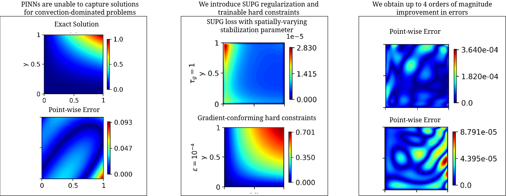
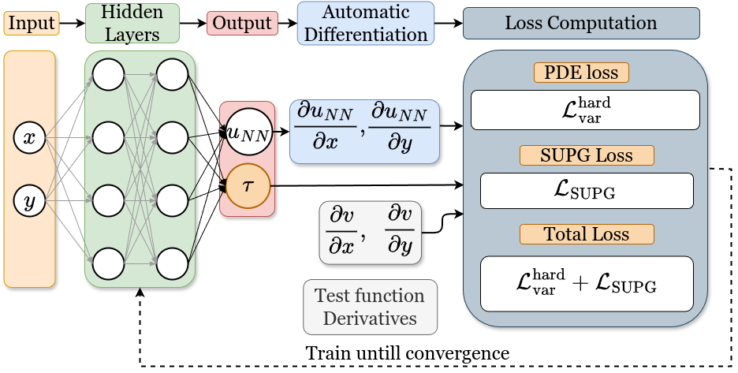
Improving hp-Variational Physics-Informed Neural Networks for Steady-State Convection-Dominated Problems
(Under review in CMAME, * denotes equal authorship)
This work proposes and studies two extensions of applying hp-variational physics-informed neural networks, more precisely the FastVPINNs framework, to convection-dominated convection-diffusion-reaction problems. First, a term in the spirit of a SUPG stabilization is included in the loss functional and a network architecture is proposed that predicts spatially varying stabilization parameters. Having observed that the selection of the indicator function in hard-constrained Dirichlet boundary conditions has a big impact on the accuracy of the computed solutions, the second novelty is the proposal of a network architecture that learns good parameters for a class of indicator functions. Numerical studies show that both proposals lead to noticeably more accurate results than approaches that can be found in the literature.
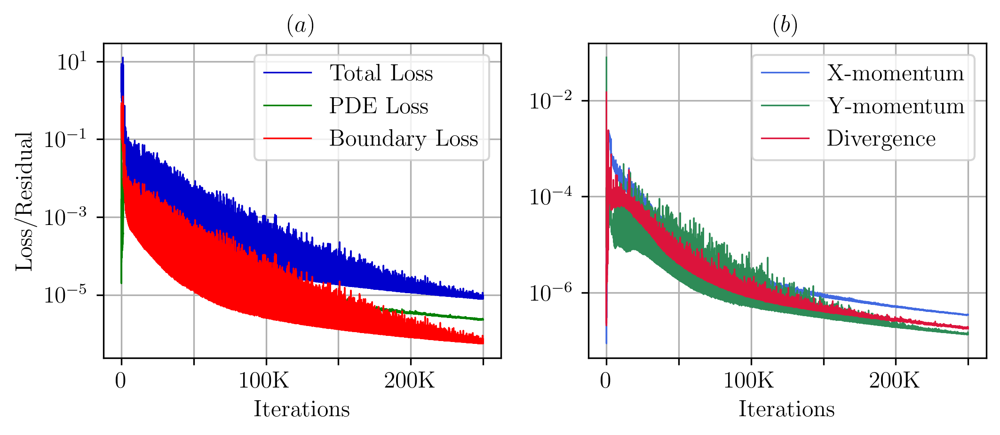
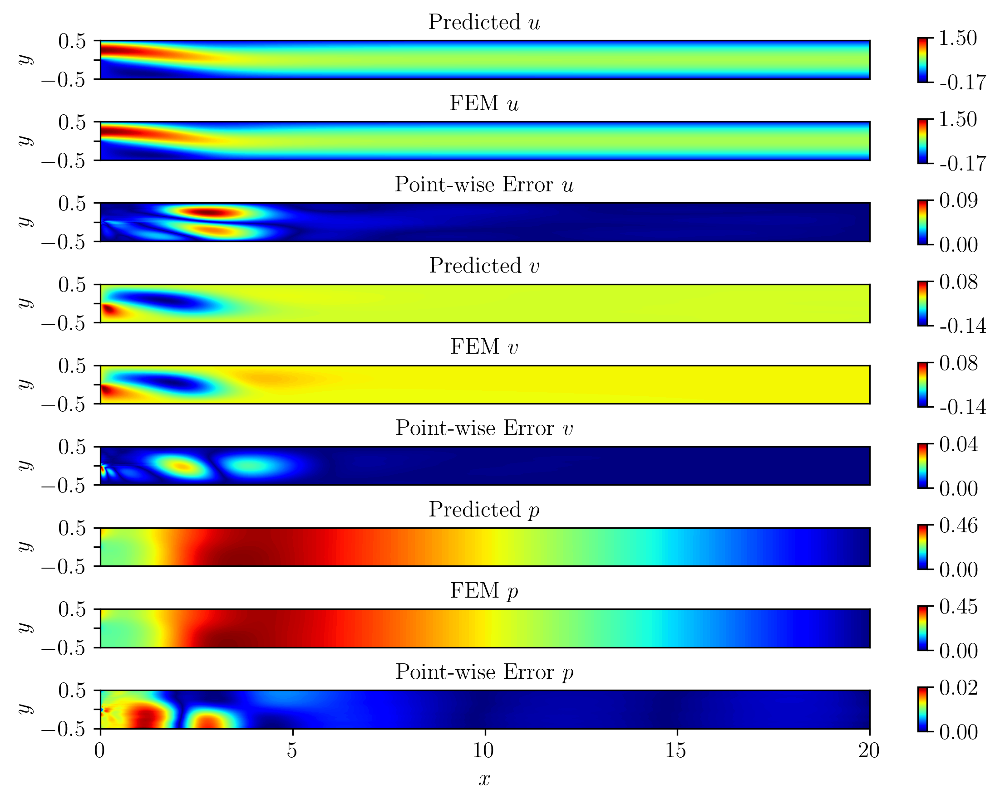
An efficient hp-Variational Physics Informed Neural Network framework for solving the Incompressible Navier-Stokes equation
(Under review in Computers and Fluids)
We extend the FastVPINNs framework to vector-valued problems, with a particular focus on solving the incompressible Navier-Stokes equations for two-dimensional forward and inverse problems, including problems such as the lid-driven cavity flow, the Kovasznay flow, and flow past a backward-facing step for Reynolds numbers up to 200. Our results demonstrate a 2x improvement in training time while maintaining the same order of accuracy compared to PINNs algorithms documented in the literature. We further showcase the framework's efficiency in solving inverse problems for the incompressible Navier-Stokes equations by identifying the Reynolds number of the underlying flow. This implementation opens new avenues for research on hp-VPINNs in CFD problems, potentially extending their applicability to more complex problems.
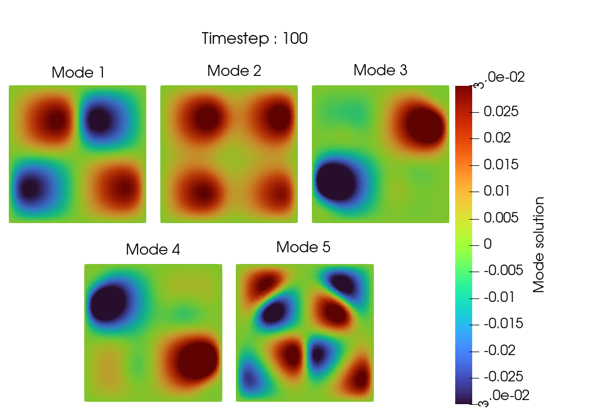
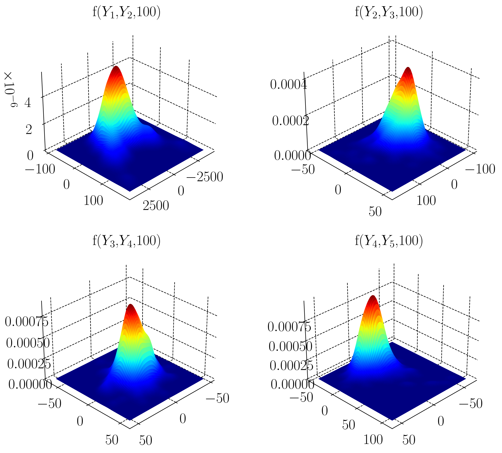
A finite element implementation of the dynamically orthogonal field equations scheme for uncertainty quantification
In this work, we employ an efficient and provably accurate Dynamically Orthogonal (DO) field equation method for reducing the stochastic order by ensuring that the mean squared error of the variance of the stochastic field is minimised. By hypothesizing a decomposition of the solution field into a mean and stochastic dynamical component, we derive a system of field equations consisting of a Partial Differential Equation (PDE) for the mean field, a family of PDEs for the orthonormal basis that describe the stochastic subspace where the stochasticity ‘lives’ as well as a system of Stochastic Differential Equations that defines how the stochasticity evolves in the time varying stochastic subspace. These new evolution equations are derived directly from the original SPDE, using nothing more than a dynamically orthogonal condition on the representation of the solution. We apply this method to both linear and non-linear dynamical systems and compare our results with Monte Carlo simulations.
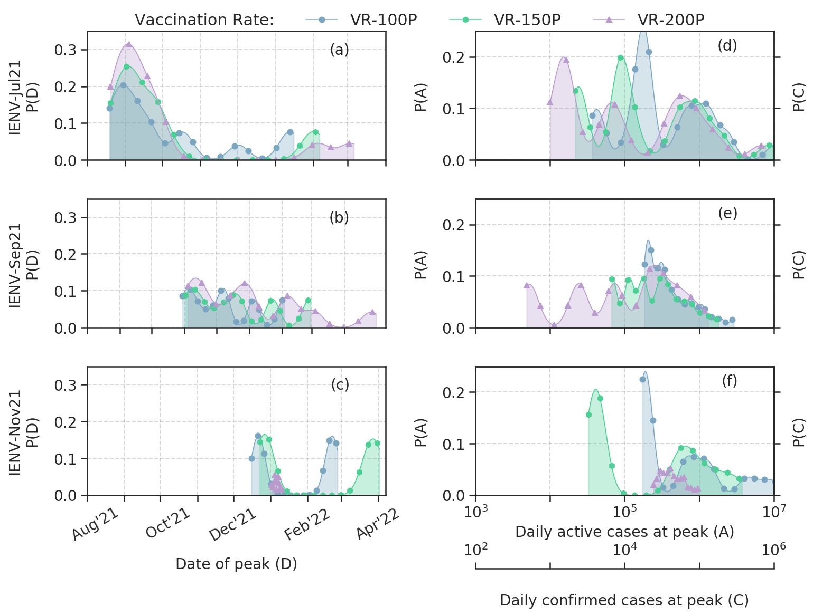
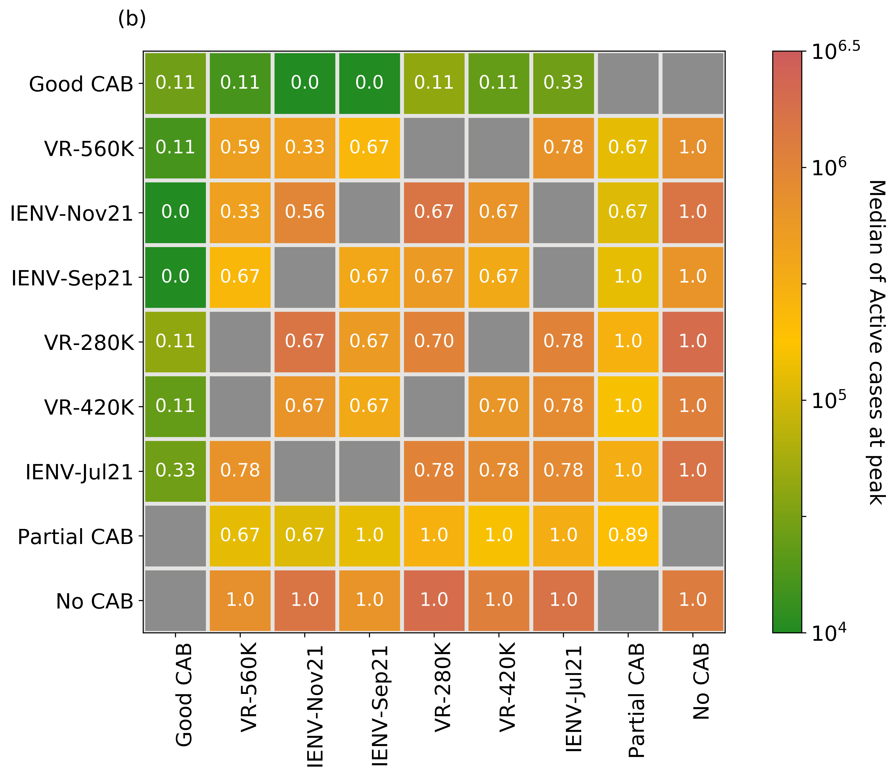
Ensemble forecast of COVID-19 in Karnataka for vulnerability assessment and policy interventions
We present an ensemble forecast for Wave-3 of COVID-19 in the state of Karnataka, India, using the IISc Population Balance Model for infectious disease spread. The reported data of confirmed, recovered, and deceased cases in Karnataka from 1 July 2020 to 4 July 2021 is utilized to tune the model’s parameters, and an ensemble forecast is done from 5 July 2021 to 30 June 2022. The ensemble is built with 972 members by varying seven critical parameters that quantify the uncertainty in the spread dynamics (antibody waning, viral mutation) and interventions (pharmaceutical, non-pharmaceutical). The probability of Wave-3, the peak date distribution, and the peak caseload distribution are estimated from the ensemble forecast.
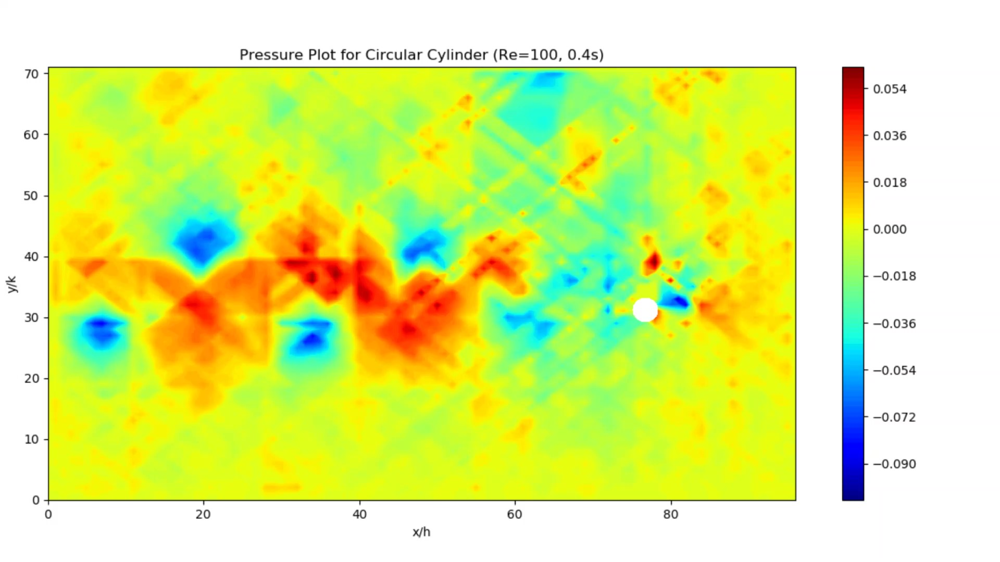
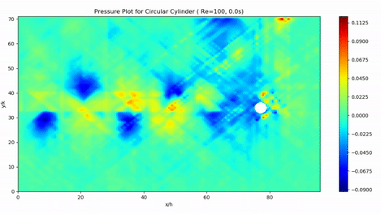
Numerical Prediction of Pressure for Flow around a Cylinder using Particle Image Velocimetry Data
B.Tech ThesisTraditional methods of pressure measurement are usually intrusive in nature, and are rarely able to quantify the entire flow field. We present an accurate, cost-effective and non-intrusive method by computing the pressure field from velocity data obtained using Particle Image Velocimetry. The result can be post-processed to find coefficients of drag and lift. We use two approaches - one that solves the Pressure Poisson equation over the entire domain, and another that integrates the pressure gradients calculated using the Navier-Stokes equation. Moreover, unlike others, we use a single-Laser PIV combined with a novel shadow correction technique, which makes our system more accesible.
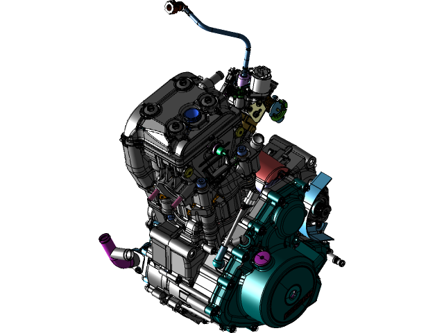
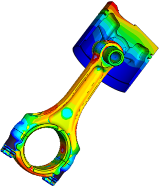
Computer Aided Design and Analysis of Powertrain Components
As an R&D Engineer at Bajaj Auto, I was involved in the CAE analysis and optimization of engine and electric vehicle components. Such CAE methods included bore distortion analysis of engine cylinders, factor of safety calculation and weight optimization of connecting rods and crankshafts, thermal analysis of Electric Motor Control Units, and noise and vibration studies, for brands like KTM, Husqvarna, Triumph and Bajaj.